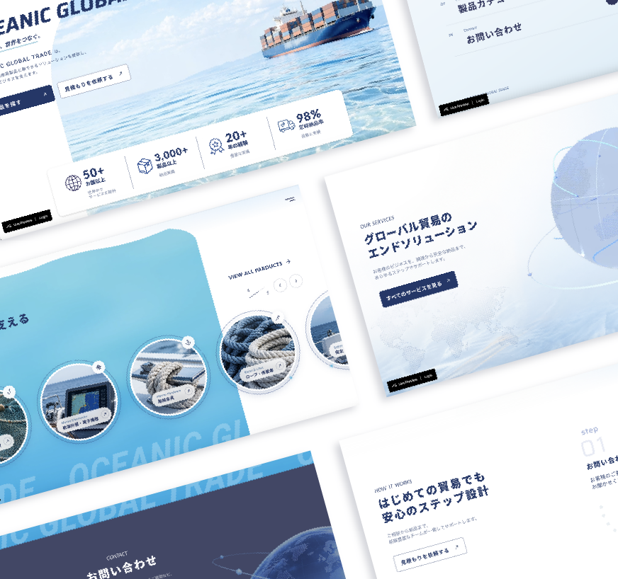
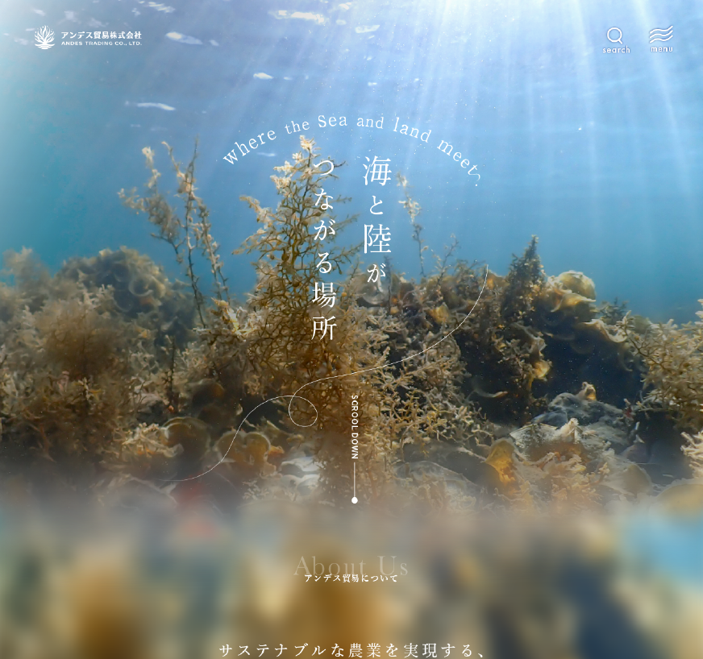
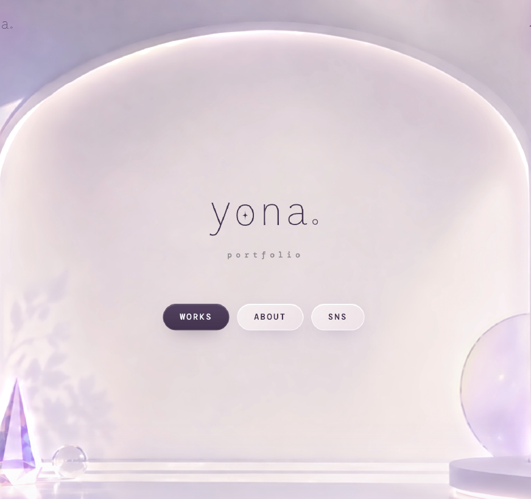
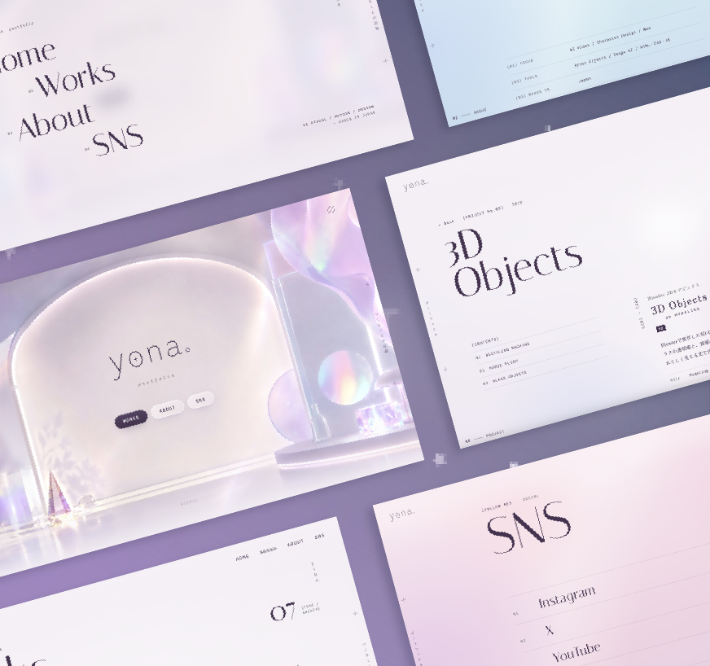

No.01(01) — 2026.10
船舶用品専門商社 コーポレートサイトOCEANIC GLOBAL TRADE
CORPORATE WEBSITE
WEB世界へ船舶用品を届ける専門商社のコーポレートサイトになります。サービス紹介にはBlenderで制作した船と地球儀のアニメーションを使い、海を越えて広がる事業を表現しました。
- Role
- Web Design / 3D
- Tool
- STUDIO / Blender
福島 凪沙
portfolio
(SELECTED WORKS) 2025 — 2026
08ITEMS /
ARCHIVE
Webサイト、映像、3D、グラフィック、イラスト。
光と色を手がかりに、ひとつずつ形にしてきたものたち。
WEB, VIDEO, 3D, GRAPHIC AND ILLUSTRATION — SMALL WORLDS SHAPED BY LIGHT AND COLOR, ONE AT A TIME.

No.01(01) — 2026.10
CORPORATE WEBSITE
WEB世界へ船舶用品を届ける専門商社のコーポレートサイトになります。サービス紹介にはBlenderで制作した船と地球儀のアニメーションを使い、海を越えて広がる事業を表現しました。

No.02(02) — 2026
BANNER / WEB DESIGN
WEBバナー・Webデザイン・動画用素材のまとめになります。視線の流れ、情報の見やすさを考えながら、デザインで伝える、魅せることも考え制作しております。
(03) — 2026
PRINT / BOOTH DESIGN
PRINTパンフレットやチラシ、展示ブースなどのデザインのまとめになります。、それぞれの置かれる環境・ターゲット層などしっかり考慮しデザインを行いました。
(04) — 2026.09
WEDDING PROFILE MOVIE
VIDEO結婚式の披露宴で上映したプロフィールムービーになります。事前に構成を考え、星を中心としたディテールで統一感を持たせながら、楽しんでみていただくために展開にメリハリのある構成にしております。
(05) — 2026
3D MODELING
3DBlenderで制作した3Dオブジェクトになります。金属の機械、へびのぬいぐるみ、光の反射を試すために作成したガラスのオブジェクトなど、質感の違うものを作成いたしました。
(06) — 2026.07
WEDDING INVITATION
WEB自身の結婚式のWeb招待状になります。印象的なタイポグラフィを作成し、パララックス表現なども取り入れ積極的にスクロールを促すデザインに。しかし重要な情報にはスムーズに視線がいくように設計いたしました。


(07) — 2026.10
PORTFOLIO WEBSITE
WEBポートフォリオサイトになります。十分に余白をとり、見せたい情報への視線誘導をしております。情報の見やすさだけでなく、自身を知っていただくためのデザイン・好みの世界観を取り入れております。カーソルに反応して揺らめく背景をWebGLで描いています。
(08) — 2026
ILLUSTRATION GALLERY
ILLUSTRATIONオリジナルのキャラクターイラスト。光が透けるようなやわらかい色と、やさしい線で、少し不思議な空気をまとった女の子たちを描いています。
(PROFILE) WHO I AM
yona。
AI CREATIVE
/ VISUAL & MOTION
学ぶこと・デザインすることがとにかく大好きで、表現の幅を広げるために色々なものを制作しております。
ガラス越しの光や、水面のゆらぎのような、やわらかくて少し不思議な空気が特に好きです。
それぞれの世界観をふくらませて、見た人の記憶に光り、残るものを目指して制作しています。
I CREATE ONE-OF-A-KIND DESIGNS — CHASING SOFT LIGHT, DREAMLIKE COLORS, AND A LITTLE BIT OF WONDER.
(FOLLOW ME) SOCIAL